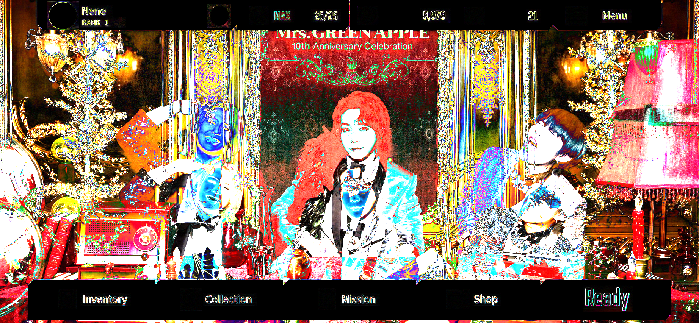
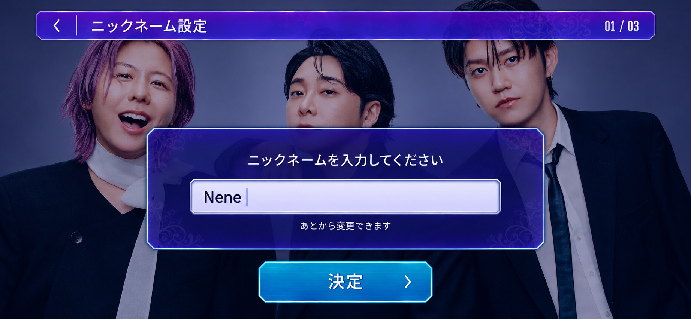
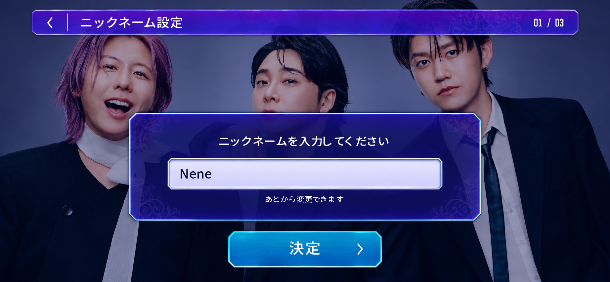
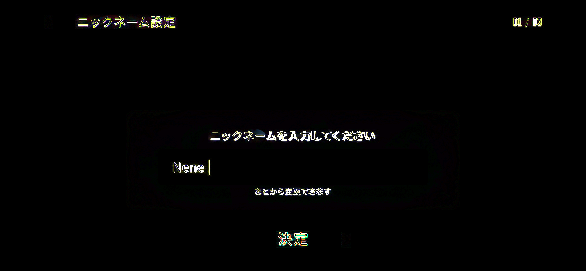
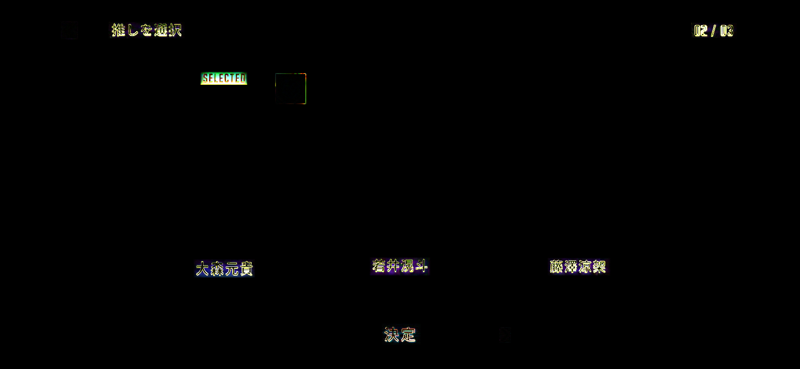
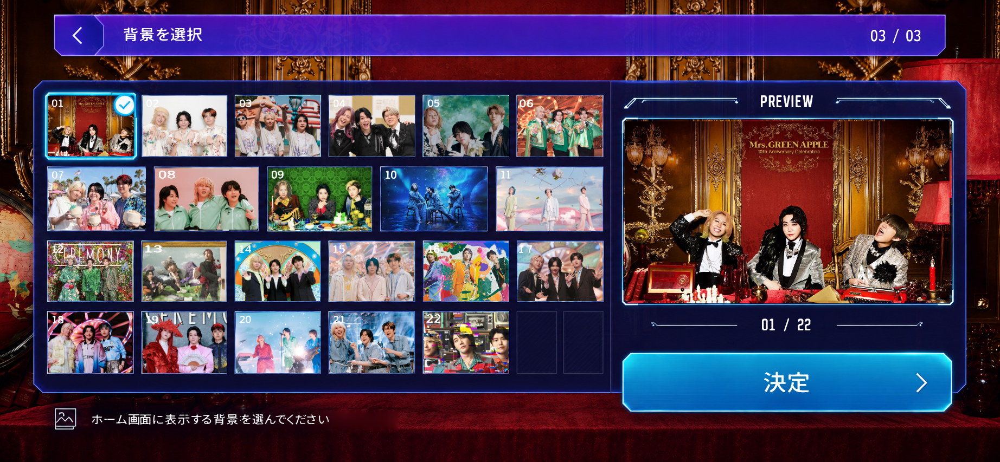
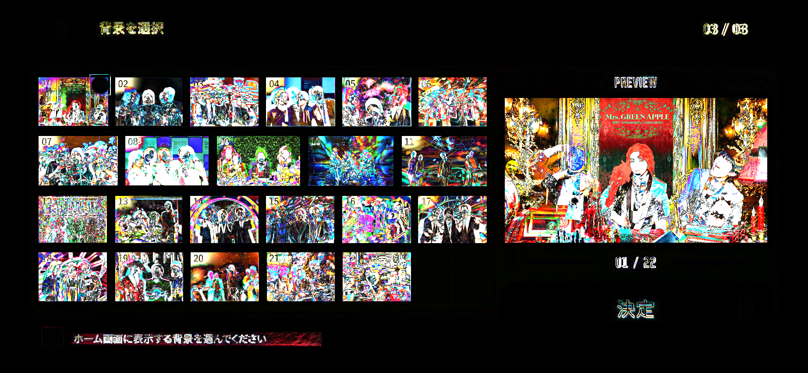

home


全体RGB平均絶対差: 48.7366 / 255、UI・文字領域: 2.9692 / 255
Original supplied backgrounds replace reference photo crops; full-frame difference is not a UI fidelity score.
1844×853 / Chromium。参照PNGを実際のUIとして使用していません。背景選択とホームは提供された元写真を使用しているため写真領域が異なります。差分を再現率へ読み替えないでください。iPhone実機は未検証です。
全体RGB平均絶対差: 0.3935 / 255、UI・文字領域: 15.7163 / 255



全体RGB平均絶対差: 1.3843 / 255、UI・文字領域: 6.5690 / 255
Native input caret omitted when unfocused.

全体RGB平均絶対差: 0.6530 / 255、UI・文字領域: 2.9537 / 255


全体RGB平均絶対差: 21.2231 / 255、UI・文字領域: 5.8358 / 255
Original supplied backgrounds replace reference photo crops; full-frame difference is not a UI fidelity score.

全体RGB平均絶対差: 48.7366 / 255、UI・文字領域: 2.9692 / 255
Original supplied backgrounds replace reference photo crops; full-frame difference is not a UI fidelity score.